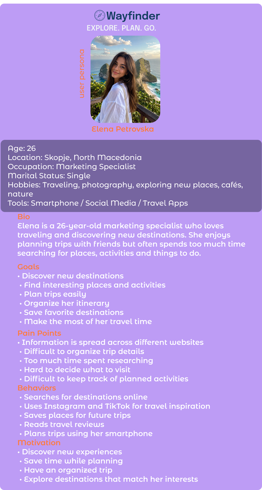
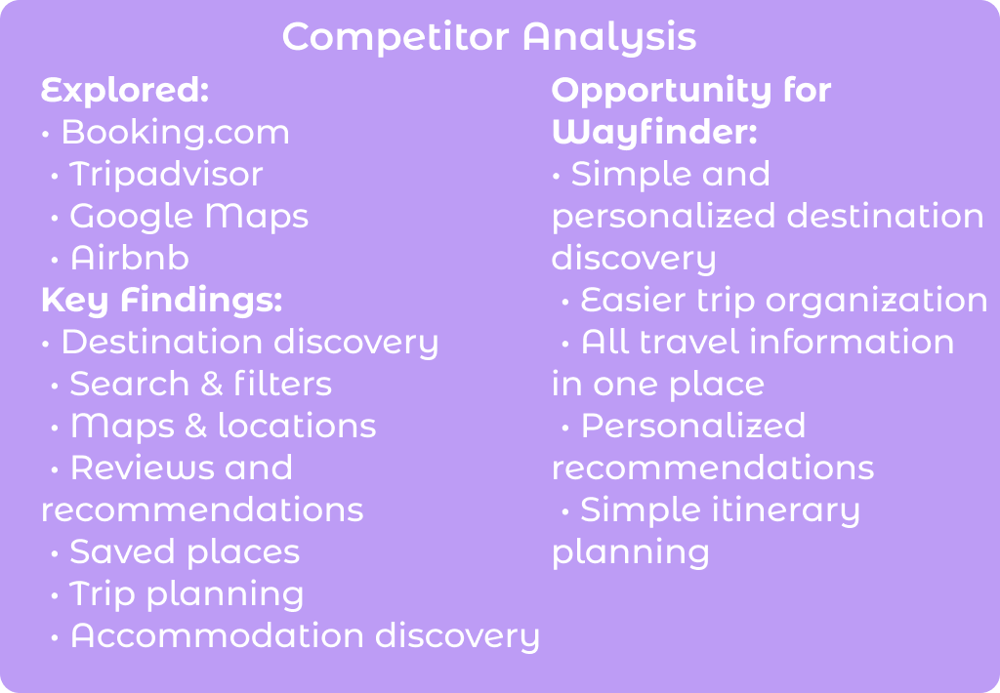
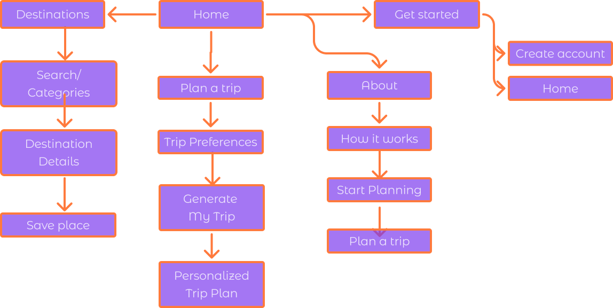
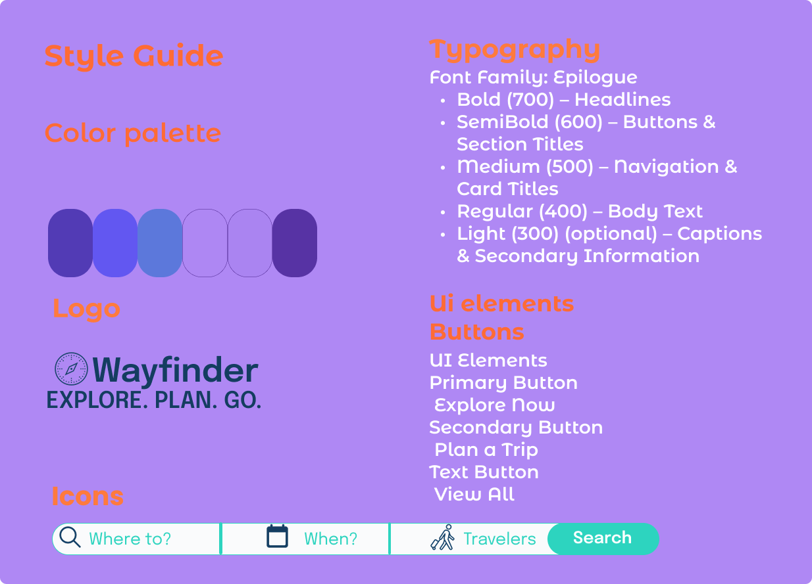
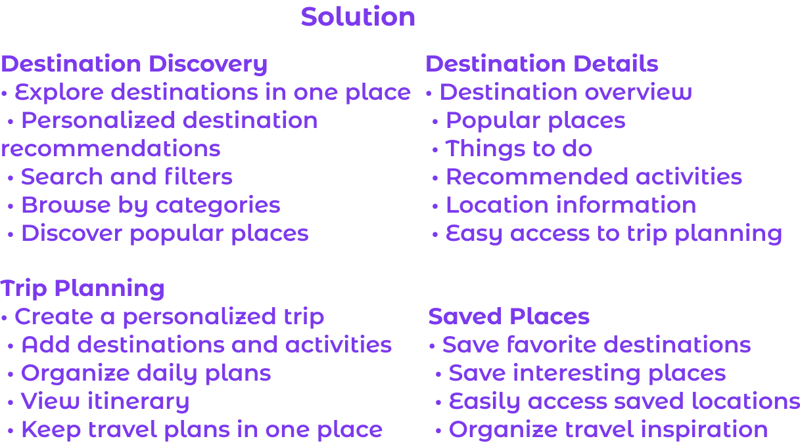
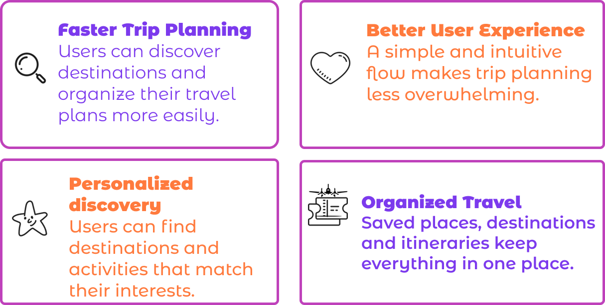

WAYFINDER
Travel Planning & Destination Discovery AppTimeline
August 2026Tools
FigmaRole
UX/UI Research UX/UI Design User Persona User Flow Wireframing Prototyping Usability TestingProject overview
Wayfinder is a mobile travel application designed to help users discover destinations, plan trips and organize their travel experience in one place. The app makes trip planning easier by combining destination discovery, personalized recommendations and trip organization into a simple and intuitive experience.
Problem
Planning a trip often requires using multiple platforms for inspiration, accommodation, activities and itinerary planning. Users can easily feel overwhelmed by too many options and have difficulty keeping all their travel information organized in one place. Wayfinder was created to simplify the process and make travel planning more enjoyable and efficient.
Pain points
- Travel information is scattered across different platforms
- Difficult to choose the right destination
- Too many options when planning a trip
- Hard to organize activities and places
- Users spend a lot of time researching
- Difficult to keep an itinerary organized
- Lack of personalized travel recommendations


User Flow



Results
